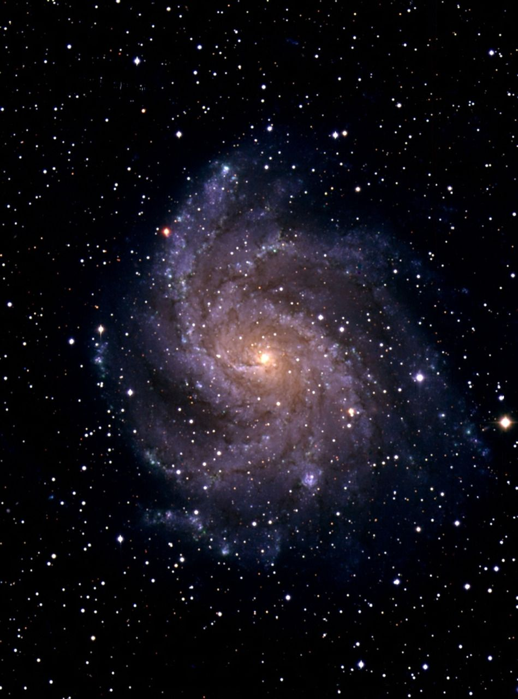

Welcome to Space and Universe
The universe is everything. It includes all of space, and all the matter and energy that space contains. It even includes time itself and, of course,it includes you. Earth and the Moon are part of the universe, as are the other planets and their many dozens of moons
That's big but the universe is almost certainly much bigger. The question than many cosmologists have pondered is how much bigger. Today we have an answer thanks to some interesting statistical analysis by Mihran Vardanyan at the University of Oxford and a couple of buddies
|  |
NASA
NASA was created largely in response to the Soviet launching of Sputnik in 1957. It was organized around the National Advisory Committee for Aeronautics (NACA), which had been created by Congress in 1915. NASA's organization was well under way by the early years of Pres. John F.The National Aeronautics and Space Administration is an independent agency of the U.S. federal government responsible for the civil space program, aeronautics research, and space research. NASA was established in 1958, succeeding the National Advisory Committee for Aeronautics (NACA), to give the U.S. space development effort a distinctly civilian orientation, emphasizing peaceful applications in space science. NASA has since led most American space exploration, including Project Mercury, Project Gemini, the 1968-1972 Apollo Moon landing missions, the Skylab space station, and the Space Shuttle. NASA supports the International Space Station and oversees the development of the Orion spacecraft and the Space Launch System for the crewed lunar Artemis program, Commercial Crew spacecraft, and the planned Lunar Gateway space station. The agency is also responsible for the Launch Services Program, which provides oversight of launch operations and countdown management for uncrewed NASA launches. NASA's science is focused on better understanding Earth through the Earth Observing System; advancing heliophysics through the efforts of the Science Mission Directorate's Heliophysics Research Program;[9] exploring bodies throughout the Solar System with advanced robotic spacecraft such as New Horizons and planetary rovers such as Perseverance;[10] and researching astrophysics topics, such as the Big Bang, through the James Webb Space Telescope, and the Great Observatories and associated programs.[11]
.png) |
During spaceflight. As of March 2021, in-flight accidents have killed 15 astronauts and 4 cosmonauts, in five separate incidents. Three of them had flown above the Kármán line (edge of space), and one was intended to do so. In each case, the entire crew was killed. There have been two space shuttles lost due to explosion. The Challenger shuttle exploded in 1986 due to a leak in it's fuel system causing the booster rockets to separate. This was followed on February 1st, 2003 with the Columbia explosion.On January 28, 1986, the Space Shuttle Challenger broke apart 73 seconds into its flight, killing all seven crew members aboard. The spacecraft disintegrated 46,000 feet (14 km) above the Atlantic Ocean, off the coast of Cape Canaveral, Florida, at 11:39 a.m. EST (16:39 UTC) NASA has successfully launched 166 crewed flights. Three have ended in failure, causing the deaths of seventeen crewmembers in total: Apollo 1 (which never launched) killed three crew members in 1967, STS-51-L (the Challenger disaster) killed seven in 1986, and STS-107 (the Columbia disaster) killed seven more in 2003. There have been two space shuttles lost due to explosion. The Challenger shuttle exploded in 1986 due to a leak in it's fuel system causing the booster rockets to separate. This was followed on February 1st, 2003 with the Columbia explosion. There have been two space shuttles lost due to explosion. The Challenger shuttle exploded in 1986 due to a leak in it's fuel system causing the booster rockets to separate. This was followed on February 1st, 2003 with the Columbia explosion. In the space of six days, the agency recalls three fatal space tragedies: the Apollo 1 fire of Jan. 27, 1967, the Challenger shuttle disaster of Jan. 28, 1986 and the Columbia shuttle accident of Feb. 1, 2003. During spaceflight. As of March 2021, in-flight accidents have killed 15 astronauts and 4 cosmonauts, in five separate incidents. Three of them had flown above the Kármán line (edge of space), and one was intended to do so. In each case, the entire crew was killed.